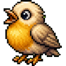

 WindWind
WindWindTap a stage to read its story.
Chirplet is a small plump golden-yellow fledgling with rounded wing-stubs, a short beak, and wide dark eyes that gleam with intelligence above its oversized round head. Its fluffy yellow breast feathers trap wind and make it bounce slightly even on calm days. In Gale Ridge's lower cliff pockets it sits facing the prevailing wind with its beak open - not eating, but tasting the air, learning each note of the storm's voice. Chirplet's own song is a single pure note, held as long as its small lungs allow.
Field note: Chirplet holds a single sung note for up to forty-five seconds without breathing - Gale Ridge musicians use it to tune their instruments.
Storm Spire. Chirplet and its family are found in the Storm Spire. See everyone who lives there.
Share a Bond Food that matches its types to become friends. Chirplet loves:
A Bond Food is not a trick. It joins your spirit with the Kimuro's spirit, and only when it chooses you.
Print the Kimuro adventure packs: mazes, cards, a board game and Bond Mark medals.
See the printable packs